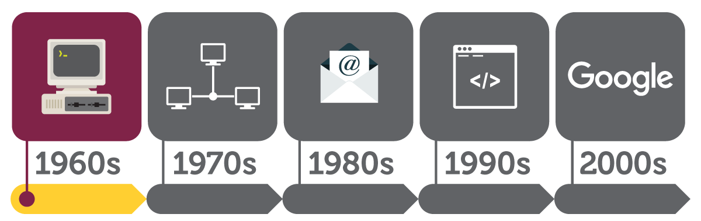

Internet History
The Internet started in the 1960s as a way for government researchers to share inform computer or have magnetic computer tapes sent through the conventional postal system.
Read MoreAdditional Links
SearchIt is a long established fact that a reader will be distracted by the readable content of a page when looking at its layout.
It is a long established fact that a reader will be distracted by the readable content of a page when looking at its layout.
It is a long established fact that a reader will be distracted by the readable content of a page when looking at its layout.
It is a long established fact that a reader will be distracted by the readable content of a page when looking at its layout.
Evolution Phases